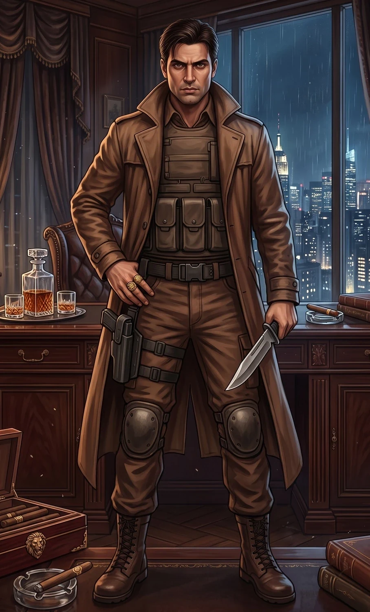
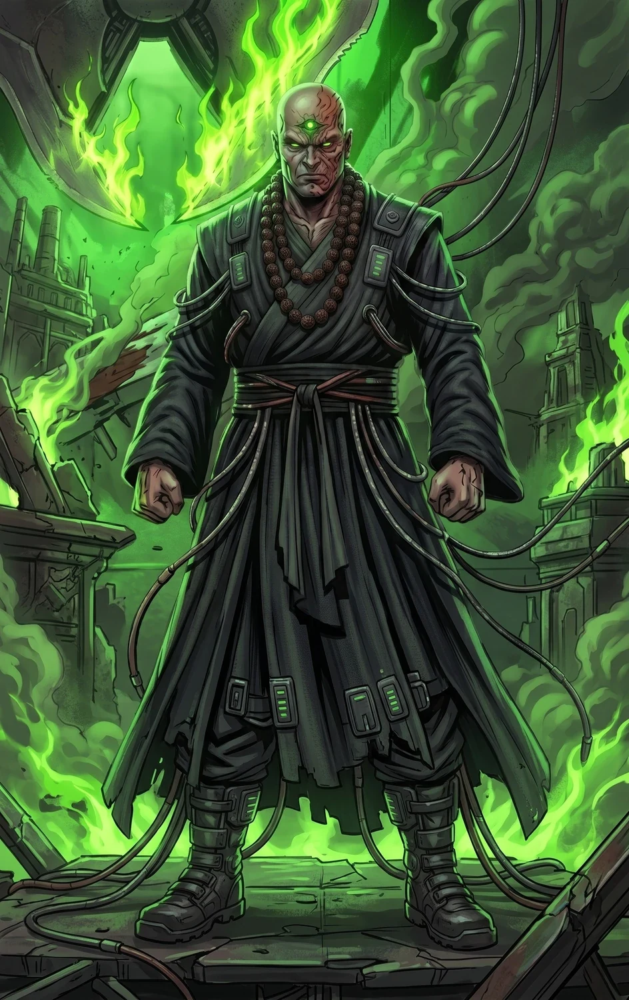
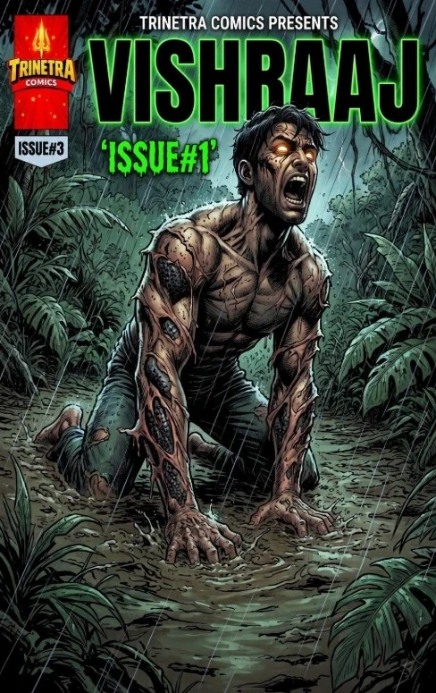
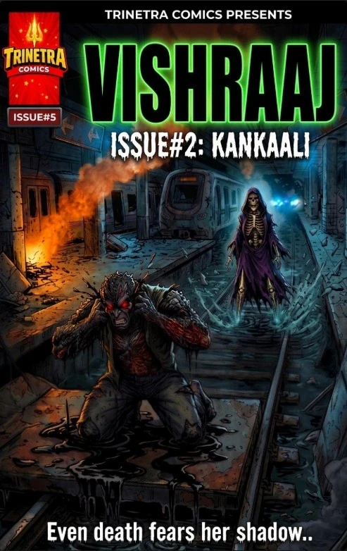
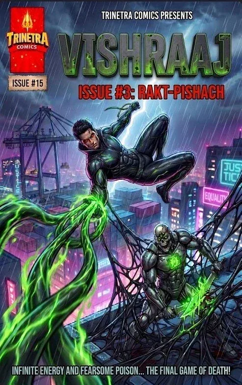
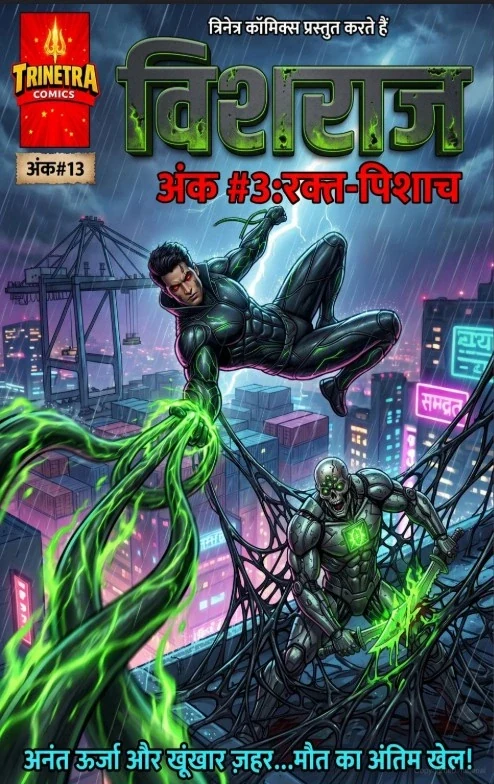

TRINETRA HERO / VISHRAAJ
VISHRAAJ
THE KING OF VENOM
Once Mumbai’s most lethal and highly-paid mercenary, Vivan was betrayed and killed in a forgotten occult temple. Ancient serpentine magic/science fused with his dying DNA, resurrecting him as an apex predator who now wages a brutal one-man war against the Kaal Mandal.
01 / IDENTITY
02 / ORIGIN
The mercenary
who came back.
Vivan was shaped by the unforgiving streets of Mumbai’s slums. A street orphan forced into violence to survive, he eventually became one of the underworld’s most lethal and highly-paid mercenaries.
Yet he secretly used his blood-money to build the Umeed Trust orphanage, determined that children should not suffer the fate he had endured.
During a mission in a forgotten occult underground temple, Vivan was betrayed and killed. His dying DNA fused with ancient serpentine magic/science, resurrecting and mutating him into Vishraaj—the King of Venom.
03 / POWERS
Pitch-Black Scales
Impenetrable, iridescent bio-organic scales can withstand extreme kinetic impact and standard ballistics.
Liquid Acid
Produces highly corrosive biological venom.
Crystalline Tethers
Liquid venom hardens on contact with air into diamond-dense crystalline tethers.
Instant Seal
A thick, instant-hardening sealant used to repair and reinforce damaged tissue and bio-armor.
Point-Blank Blast
A highly pressurized explosive blast of raw acid.
Apex Predator
Enhanced strength, supersonic reflexes and superhuman agility.
Black-Venom Healing
Rapidly mends flesh and repairs damaged bio-armor using black venom as a biological sealant.
04 / ABILITIES & EQUIPMENT
Serpentine CQB
Master hand-to-hand combatant blending military close-quarters combat with serpentine fluidity.
Cold Precision
A tactical genius and expert marksman/sniper who excels at stealth and psychological warfare.
Venom Web
A venom web that hardens on contact.
Deadly Venom
Expels deadly venom from his mouth that can easily kill an opponent.
05 / CIVILIAN IDENTITY

THE MAN BEFORE THE MONSTER
VIVAN
Brief description: A 32-year-old Indian male, handsome, stoic and muscular, with a deep rugged scar across his brow. Vivan was a street orphan who became an elite mercenary in Mumbai’s criminal underworld.
His civilian appearance is built around heavy trench coats with popped collars, dark turtlenecks, tactical cargo pants and combat boots, allowing him to blend into the shadows.
His secret orphanage is the emotional tether that keeps the remnants of his humanity alive.
06 / THE ANTAGONIST

KAAL MANDAL / WARLORD
KAAL-DAND
Brief description: A ruthless cyber-Aghori warlord and the architect of the Kaal Mandal’s campaign against Vishraaj.
Kaal-Dand blends ancient Aghori mysticism with bleeding-edge cybernetics. He operates through underworld power, occult forces and technologically enhanced assassins, treating Vishraaj’s battles as opportunities to gather combat data.
In Issue #1 he orchestrates Vivan’s assassination. In Issue #2 he sends Kankaali to test the King of Venom. In Issue #3 he initiates the Trinetra Overdrive and unleashes Rakt-Pishaach.
07 / COSTUME & APPEARANCE
A monster
without a mask.
When his powers activate, Vivan’s eyes transition from human brown to glowing intense red with vertical serpentine slits, and he possesses retractable needle-like fangs.
His refined evolved form has no traditional fabric. His body is encased in sleek, form-fitting, pitch-black iridescent bio-organic armor with faint emerald-green energy veins. Ancient warrior motifs appear as bracers and chest plating, while scales around his neck form a sharp, stiff high collar.
08 / WEAKNESSES
The armor can melt.
Trinetra-plasma and extreme radiation can melt Vishraaj’s scales, halt his healing factor and boil his venom.
His emotional tether.
Vivan will blindly sacrifice himself and abandon tactical advantage to protect the orphans, particularly the young boy Raju.
09 / PERSONALITY
Cold outside.
Protective within.
Brooding, calculated and fiercely protective, Vivan is haunted by the ghosts of his violent past. He hates the monster he had to become, but accepts his terrifying new form as a necessary evil to protect the innocent.
He speaks little, preferring action over words, and operates with the cold, logical precision of a mercenary.
10 / COMICS
Published stories.
Five published editions across English and Hindi

Issue #1 / English
Vishraaj
Betrayed and murdered in a forgotten subterranean temple, Mumbai’s most lethal mercenary is resurrected by an ancient serpentine bio-weapon. He returns to the neon-lit streets not as a man, but as Vishraaj—the King of Venom—to hunt those who killed him.

Issue #1 / Hindi
विशराज
एक भूली-बिसरी रहस्यमयी खदान में धोखा खाकर मारा गया मुंबई का सबसे घातक भाड़े का सैनिक, एक प्राचीन और रहस्यमयी नाग-शक्ति द्वारा पुनर्जीवित होता है। वह अब एक इंसान के रूप में नहीं, बल्कि 'विशराज - विष के राजा' के रूप में उन लोगों का शिकार करने के लिए नीयन-रंगीन सड़कों पर लौट आया है, जिन्होंने उसे मारा था।

Issue #2 / English
Kankaali
As the legend of Mumbai’s new apex predator grows, the mysterious Kaal Mandal syndicate dispatches "Kankaali"—a terrifying, bone-manipulating assassin—to hunt down the King of Venom. To protect the slums of Dharavi, Vishraaj must push his new bio-organic mutation to its absolute limits.

Issue #3 / English
Rakt-Pishach
When the warlord Kaal-Dand unleashes a supercharged, radioactive cyborg to burn down everything Vishraaj holds dear, the King of Venom must push his biological limits in an apocalyptic showdown on the Bandra-Worli Sea Link to save Mumbai from nuclear devastation.

Issue #3 / Hindi
रक्त-पिशाच
जब काल-दंड विशराज के अपनों को राख करने के लिए एक रेडियोधर्मी साइबोर्ग को आज़ाद करता है, तो मुंबई को परमाणु तबाही से बचाने के लिए 'विष के राजा' को बांद्रा-वरली सी लिंक पर अपनी शक्तियों की अंतिम सीमा को पार करना होगा।